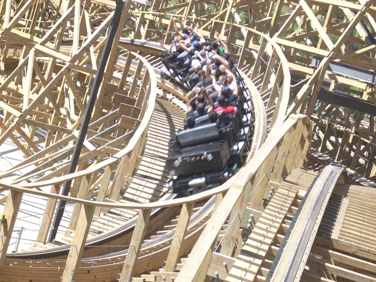
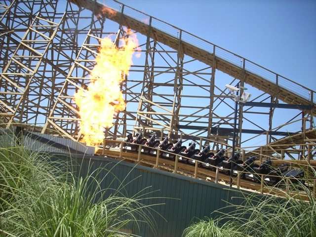
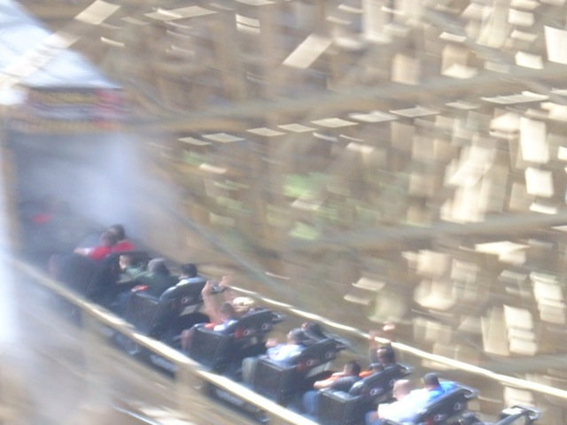
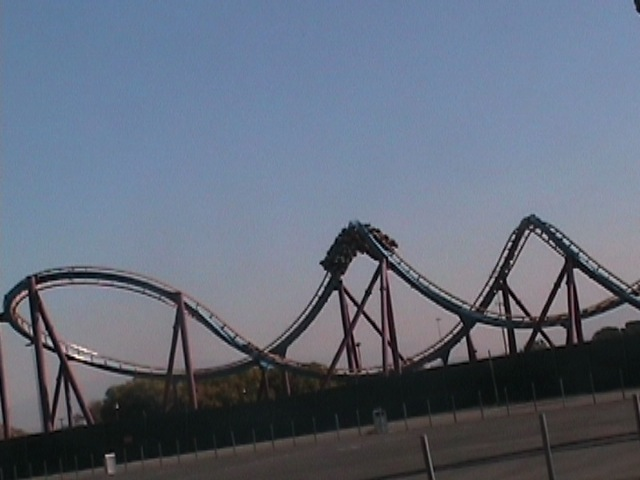
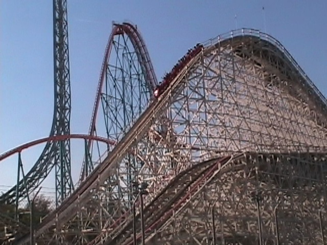
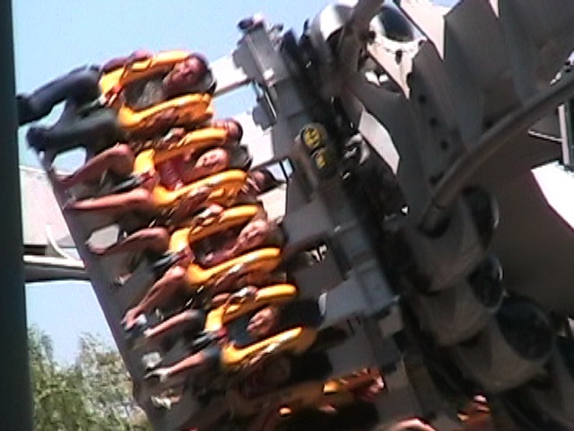
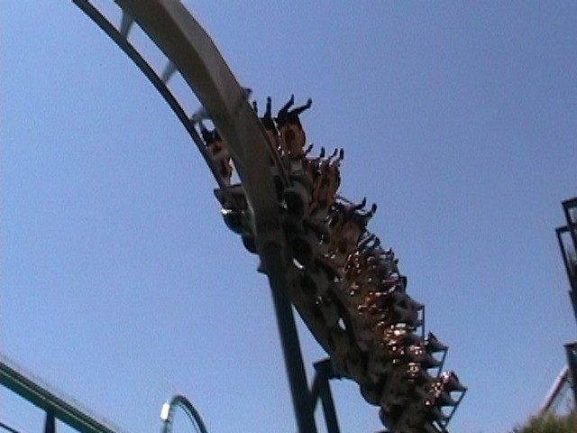
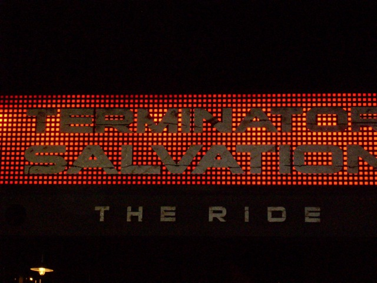

Termination Day

Ok, so
today was Termination Day. Now Termination Day is an event set up by Theme Park Review to celebrate the opening of Terminator. And to start off this awsome event, we got morning Terminator ERT!
 Grr! I'm Crazy Terminator First Drop! Give me some trains!!!
Grr! I'm Crazy Terminator First Drop! Give me some trains!!!
 Here's the GCI airtime Terminator has. It isn't much, but it's still cool.
Here's the GCI airtime Terminator has. It isn't much, but it's still cool.
 Stop! Turnaround Time!
Stop! Turnaround Time!

Damn. That sure is good ERT. There's not a single soul on the ride.

"TAKE THE TUNNEL!!!!!!"
 "Now that you took the tunnel, TAKE IT AGAIN!!!!!!!!"
"Now that you took the tunnel, TAKE IT AGAIN!!!!!!!!"
Glad to see they got with the times with the caricatures.
 The Single Riders Line was not nessecary today as the back of the park was deserted in the morning.
The Single Riders Line was not nessecary today as the back of the park was deserted in the morning.

So Cody. You may be @ Kings Dominion riding Dominator, but I'm here riding Scream! Take that!!!
 I can't deny it. Dominator < Scream. Well at least I got to ride it @ Geuga Lake.
I can't deny it. Dominator < Scream. Well at least I got to ride it @ Geuga Lake.

I just had to ride Collosus. It needs some love now that Terminator opened.

It's been a while since I've been on Batman.

Glad to see it still runs great.
Yes it would.
Well, since I ended up losing my meal ticket, I ended up having this spray candy for lunch to save money.
Good God! First the M&Ms Staircase, now this!!!? What's next? M&Ms the Ride for 2010?
Oh yeah. Around 3ish, I ended up walking over to Robbs for the Official Termination Day Party at his apartment complex.
There was Pizza, a Wii, a Pool Table, Trivia, and this pool. I had a lot of fun.
 Now that the party's over, I can ride a kickass coaster. Hey Cody, you can't find this @ Kings Dominion!
Now that the party's over, I can ride a kickass coaster. Hey Cody, you can't find this @ Kings Dominion!
 Great. While I was in line, some f**king retard hopped the fence because, like all the other fence hopping morons, he forgot his hat. Thanks for wasting 20 minutes of my life jackass.
Great. While I was in line, some f**king retard hopped the fence because, like all the other fence hopping morons, he forgot his hat. Thanks for wasting 20 minutes of my life jackass.

And now we end this awsome way the same way we started it. With some awsome Terminator ERT!
Home